SmartTools Add-on Manual
SmartTransform Suite Manual
Version 1.0.0 / November 19, 2026 / For Blender 5.1.2
SmartTransform Suite is an add-on that helps with moving, rotating, and scaling objects in the 3D Viewport (collectively called transforming). A single panel in the Sidebar brings together fields for entering values as numbers, settings for click and drag behavior, settings for its own gizmos (the arrow and ring handles that appear on screen), and "Other Tools" such as alignment, multi-object editing, and selection mistake prevention. Many of the features that keep running in the background are off at first, so you turn on only the ones you want to use. Assignments to keyboard keys such as G, R, and S are not created automatically. When you want to use them, click Copy in the panel to copy the operator ID, then register it in the keymap yourself.
1. What This Add-on Does
An add-on that bundles tools for setting an object's location, rotation, and size exactly with numbers, and for making click and drag operations easier to use.
- Enter an object's location, rotation, scale (the size multiplier), and dimensions (the actual lengths) directly as numbers, or add to the current value as a difference.
- Copy and paste values (you choose whether to paste location, rotation, or scale), apply rotation and scale, and snap to the 3D cursor or the floor (Z=0), each with a single button.
- Change behavior such as click selection while using tools like Move, Rotate, and Scale, starting a transform by dragging, and deselecting by clicking the background.
- Adjust the display, colors, size, and grab range of the add-on's own 3D smart gizmo.
- Set the on-screen display, snap steps, sensitivity, and axis lines for Smart G-R-S (a transform operation you can register to use in place of the G, R, and S keys).
- Adjust the influence range of Proportional Editing (a feature that moves the surrounding area gradually along with it) by moving the cursor.
- Use Precision Numeric Drag, which moves a number field in fixed steps with Shift + left drag.
- Use 3D Cursor Lock, which fixes the 3D cursor at its current position.
- Use Quick Align, which aligns selected objects to a reference object, and Quick Multi-Edit, which adds or removes objects to edit together while staying in Edit Mode.
- Use Smart Select Guard, which makes it harder to select objects hidden behind other shapes by mistake.
- Use Island Transform, which moves, rotates, and scales each connected part (island) of a mesh separately.
- Use Vertex Normal Aligner, which aligns an object's origin orientation or a custom orientation to the direction (normal) of the selected vertices.
- To make a piece of furniture exactly 0.75 m tall, enter a number in the "Z" field under "Dim X".
- To shift several objects by the same small amount, set the input to "Δ" and add the value.
- To rest a placed object on the floor, click "To Floor (Z=0)".
- Before exporting, to lock in the rotation and scale as they currently look, use "Apply All" or "Apply R/S".
- To edit another mesh together with the current one in Edit Mode, click "Add" under "Quick Multi-Edit", then click the object to add in the 3D Viewport.
- To rotate each connected part separately, such as a lock of hair, use "Island Transform".
- To make only the size match another object, turn the paste toggles to "Scale" only and paste.
At a Glance
This is how the screen changes when you use this add-on. Chapter 5 walks through the exact steps in the "Example" boxes for each feature.
ExampleLower Floating Objects to the Floor (Z=0) in One Step(demonstrated on Three Suzannes)
Lower each of three Suzannes floating at different heights to the floor level (Z=0).
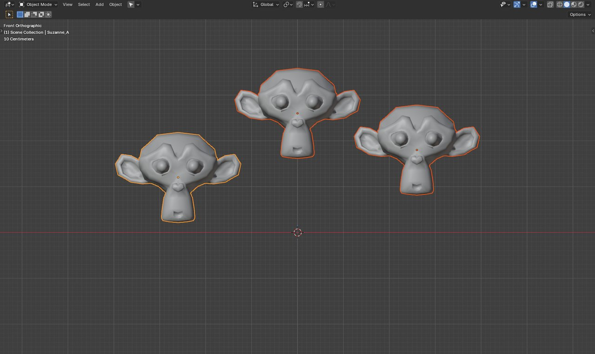
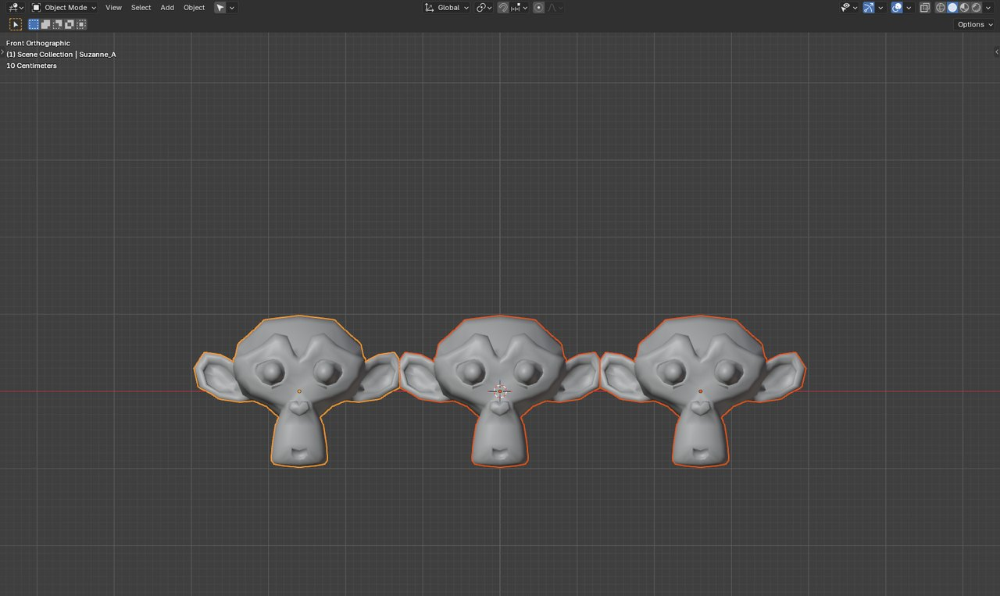
- In Object Mode, select all three Suzannes.
- In the "Smart Transform" tab > "Transform", set the second dropdown to "Each".
- Click "To Floor (Z=0)".
What to look for: With "Each", all three move so that their own origins come to Z=0 (the height of the red horizontal line). Their horizontal positions do not change. If you leave it at "Median Point", all three move together so that the center of the three comes to Z=0.
ExampleAdd Another Mesh to Editing Without Leaving Edit Mode(demonstrated on Three Suzannes)
While editing one Suzanne, add the Suzannes in the same collection to the set being edited together. You do not need to leave Edit Mode.

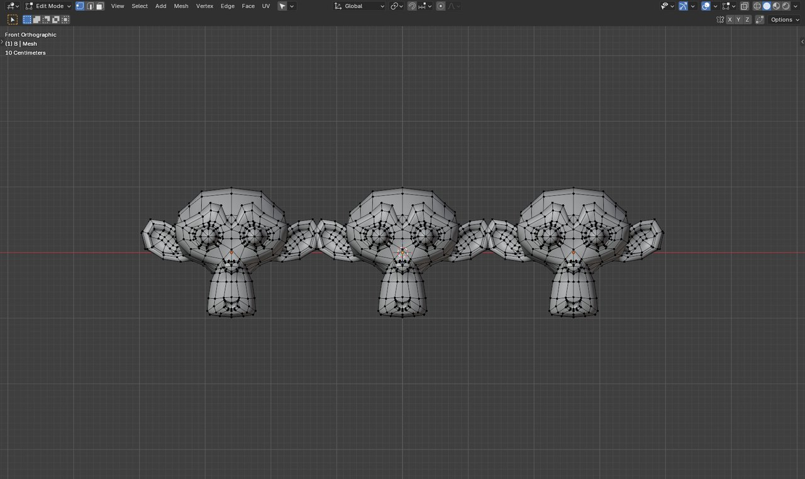
- Select the middle Suzanne and enter Edit Mode.
- In the "Smart Transform" tab > "Other Tools" > "Quick Multi-Edit", click "Add Collection".
What to look for: Before, only the middle Suzanne shows its wireframe (vertices and edges). After, the left and right Suzannes show their wireframes too, and you can edit all three together.
2. Key Features
This chapter walks through the features unique to this add-on, using numbered callouts on each figure. The numbers in a figure match the numbered list below it. Click a figure to enlarge it. Each individual setting is described under its own heading in Chapter 5.
2-1. 3D Smart GizmoTop Selling Point
Blender's standard Transform tool gizmo (left) and the SmartTransform Suite smart gizmo (right), shown side by side from the same viewpoint with the same selection. The smart gizmo packs plane (2-axis) move and scale, uniform scaling at the center, and trackball rotation into a single gizmo. The rotation rings are shown as full circles. Switch to the Transform tool, and this one gizmo handles most transforms.

- 1Move Arrow
- 2Rotate: Only the near half of the arc is shown
- 3Axis Scale: A small cube partway along the arrow
- 6Center: A small white circle
- 7Screen Rotate: The outer white circle

- 1Move Arrow
- 2Rotate: A ring that goes all the way around
- 3Axis Scale: A box outside the arrow
- 4Plane Move: An L-shaped handle. Moves along 2 axes (smart gizmo only)
- 5Plane Scale: A square handle. Stretches and shrinks along 2 axes (smart gizmo only)
- 6Center: A double circle. Drag the inside to move freely, and the outside to scale uniformly
- 7Screen Rotate: The outer white circle
- 8Trackball Rotate: The faint inner circle. Rotates freely in the direction you drag (smart gizmo only)
- In "Always-on Toggle" in Chapter 5, enable "3D Smart Gizmo Runtime".
- In "3D Smart Gizmo Settings", choose the tools that show the smart gizmo, and the handles (move, rotate, scale) shown on the Transform tool.
- In the 3D Viewport, switch to any of the Move, Rotate, Scale, or Transform tools, and the smart gizmo for that tool appears.
- One gizmo covers plane (2-axis) move and scale, uniform scaling, and even trackball rotation.
- You can change the size of the whole gizmo from 0.2 to 3.0 times. The sizes of the arrow and plane handles can also be changed separately.
- Corrects the X, Y, and Z rings so the rotation direction does not reverse when you view them from behind (when "Gizmo Circular Rotation" is on).
- When you click where a handle overlaps a selectable object, selection takes priority (on by default).
- Works in both Object Mode and Edit Mode.
Settings in detail: 5-1. Always-on Toggle, 5-8. 3D Smart Gizmo Settings, 5-4. Selection Behavior
2-2. Smart Gizmo That Changes with the ToolSee the Figures
With the Rotate tool, three rings and two circles appear; with the Scale tool, axis boxes and plane handles appear. In Edit Mode, the gizmo appears at the position of the selected vertices, edges, or faces.

- 1Rotate Around X Axis: The red ring
- 2Rotate Around Y Axis: The green ring
- 3Rotate Around Z Axis: The blue ring
- 4Screen Rotate: The outer white circle. Rotates around the axis pointing toward the screen
- 5Trackball Rotate: The faint inner circle. Rotates freely in the direction you drag

- 1Axis Scale: A box for each axis. Stretches and shrinks along one axis only
- 2Plane Scale: Stretches and shrinks along 2 axes together
- 3Uniform Scale: The white square in the center

- 1Selected Face: The orange face
- 2Gizmo Position: Appears at the center of the selected elements
Settings in detail: 5-8. 3D Smart Gizmo Settings
3. Getting Started
How to install the add-ons, how to change the interface language, and how the N panel and the "?" help buttons work in every add-on are covered in the "SmartTools Overall Specification". Please read chapters 2 to 5 there first.
| ZIP to install | SmartTransformSuite_1.0.0.zip |
|---|---|
| Name shown in Blender | Smart Transform |
| Supported Blender | 5.1.2 |
4. Where to Find It
A panel called "Smart Transform" appears on the "Smart Transform" tab of the 3D Viewport Sidebar (the column on the right that opens with the N key). The add-on also provides a small popup window for entering numbers, buttons in the bar at the top of the 3D Viewport, and extra items in the 3D Viewport "Object" menu and in the right-click menu of collections in the Outliner.
| Editors | 3D Viewport (Sidebar, top bar, and Object menu), Outliner (right-click menu of collections) |
|---|---|
| Tab | Smart Transform |
| Mode | Mainly Object Mode. Some features also work in mesh Edit Mode and Pose Mode. |
- For installing and enabling, switching to Japanese, opening the N panel, and using the "?" help button, see the relevant chapter of the SmartTools Overall Specification.
- Place the mouse over the 3D Viewport and press the N key to open the Sidebar.
- From the vertical tabs in the Sidebar, select "Smart Transform".
- Inside the panel are collapsible section headers. Click a header to open or close it. Click the "?" to the right of a header to see a detailed explanation of that section.
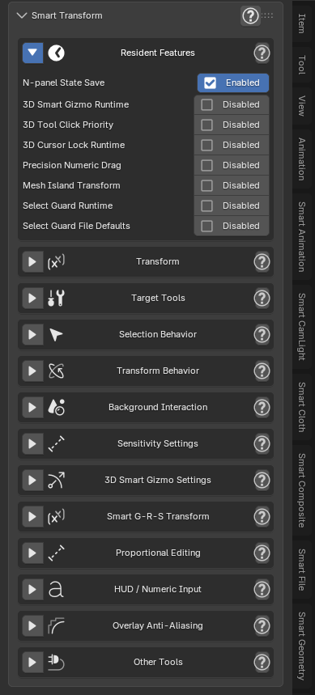
5. Features
Each heading is explained in order from the top of the panel. Click the "?" to the right of a heading to show the same explanation in Blender. The blue "Example" boxes show real operations on simple models such as Suzanne, with the 3D Viewport before and after.
5-1. Always-on Toggle
Turn on or off, all in one place, the features that keep waiting in the background even when no button is pressed. It is closed at first. Turning off features you do not use makes Blender start up faster and reduces idle load.
LocationThe section header at the very top of the panel, "Always-on Toggle".
| Item | What it does |
|---|---|
| "Enabled" / "Disabled" buttons | The button at the right of each row. Each click switches between "Enabled" and "Disabled". The state is saved immediately and remains after you reopen Blender. |
| N-panel State Save | Sets whether the settings changed in this panel are saved to the Blender settings folder and restored the next time Blender starts. It is enabled at first. |
| 3D Smart Gizmo Runtime | Keeps the display of the add-on's own 3D smart gizmo, and its reaction when the mouse hovers over it, always ready before you use a tool. When enabled, the add-on's own gizmo appears with tools such as the Transform tool. It is disabled at first. |
| 3D Tool Click Priority | Has this add-on handle clicks made with tools such as Move and Rotate. It does not disable the selection keymaps of Blender or other add-ons. Clicks made while holding Shift, Ctrl, or Alt are passed to Blender's standard handling, so deselecting and loop selection still work as usual. It is disabled at first. |
| 3D Cursor Lock Runtime | Turns on the "3D Cursor Lock" feature itself. A lock button appears in the bar at the top of the 3D Viewport only while it is on. It is disabled at first. |
| Precision Numeric Drag | Turns on the feature that moves a number field in fixed steps with Shift + left drag. It is disabled at first. |
| Island Transform | Turns on the feature that transforms each connected part of a mesh separately. It is disabled at first. |
| Select Guard Runtime | Runs the Smart Select Guard watcher in the current scene, and also uses it as the initial value for scenes you set up from now on. Disable it when you want to reduce idle load. It is disabled at first. |
| Select Guard File Defaults | Applies the default Smart Select Guard settings to the scene once when a file is opened. Enable it only when you want scene setup to be automatic. It is disabled at first. |
5-2. Transform
The place to view and enter the location, rotation, scale, and dimensions of selected objects as numbers. It also has buttons for copying and pasting values, applying, and snapping. The number fields in the Sidebar look the same in every mode, and values actually change only when an object is selected in Object Mode.
LocationThe "Transform" section header, below "Always-on Toggle". It is open at first.
| Item | What it does |
|---|---|
| Object / Mode / Target | Shows the name of the object currently being operated on, the current mode (such as "Object" or "Edit"), and the type of target (such as "Object", "Pose Bone", or "Vertex"). When there is no active object, "No active object" appears. |
| Settings: Use Scene Transform Orientation | When on, the orientation used to read values (the coordinate system) matches the one selected in Blender's screen. It is on at first. |
| Settings: Δ Display | How the field behaves when you enter values with "Δ". "Knob" keeps the last entered value displayed. "Auto-Zero" returns the field to its original value (such as 0) right after you enter a value. |
| Settings: Δ Scale | How values are counted when you enter scale with "Δ". "Factor" multiplies (1.1 makes it 10% larger), and "Add Value" adds (0.1 makes it 10% larger). |
| Settings: Scale Link Axes (X / Y / Z) | For axes that are turned on, changing the scale of any one of them changes the other axes that are on in the same way. Axes that are off move independently. |
| Settings: Pose | How rotation works when you choose "Each" in Pose Mode. "Channel Box" changes only the bone's rotation values. "Oriented Pivot" rotates around the base of the bone in the selected coordinate system. |
| Open Popup | Opens the same number fields in a small window. For details, see the "Transform Popup" chapter. |
| The three dropdowns: coordinate system, "Median Point" / "Each", and "Absolute value" / "Δ" | The upper dropdown chooses the coordinate system used to read values ("Global" in the figure). The lower left dropdown chooses whether selected objects are treated as a group ("Median Point") or one by one ("Each"). The lower right dropdown chooses whether the number you enter becomes the value as is ("Absolute value") or is added to the current value ("Δ"). |
| Five icon-only buttons | The five buttons below the dropdowns. From the left: "Copy", which remembers the location, rotation, and scale of the active object (or active pose bone); "Paste", which pastes the remembered values onto the selected objects; "Apply R/S" (the check mark), which locks in rotation and scale as they currently look; "Apply All", which locks in location, rotation, and scale; and "Snap to Cursor", which moves the selected objects to the 3D cursor. The two apply buttons open a confirmation window and work only in Object Mode. |
| Paste toggles (Location / Rotation / Scale) | The three toggles below the buttons choose what "Paste" pastes. Items that are off are left unchanged. When all three are off, "Paste" cannot be clicked. All three are on at first. |
| Loc X / Rot X / Scale X / Dim X (and Y and Z below them) | The fields for entering numbers. Dimensions are the object's actual lengths. Clicking the "×" at the right of a location, rotation, or scale field returns that field to its original value (1 for scale, 0 for location and rotation). The "×" on a dimensions field returns the length to what it is at scale 1 (Object Mode only). Influence range settings such as "Only Origins" take effect just as they do when you enter values in the dimensions fields. Objects with a length of 0 (such as empties) are not changed. The square at the right of a scale field turns the scale link axis on or off. |
| To Cursor | Moves the selected objects to the location of the 3D cursor. With "Median Point", the center of the whole selection moves there; with "Each", each object moves to the 3D cursor. It also works in Edit Mode and Pose Mode. |
| Cursor To Sel | Moves the 3D cursor to the center of the selected objects (in Edit Mode, the selected vertices and so on). |
| To Active | Moves the selected objects to the same location as the active object (the one selected last). It works only in Object Mode. |
| To Floor (Z=0) | Aligns the height of the selected objects to Z=0. In Object Mode, with "Median Point" the center of the whole selection, and with "Each" each object's origin, lands at Z=0. It also works in Edit Mode and Pose Mode. |
- In Object Mode, select one object.
- Make sure the dropdown on the right is set to "Absolute value", then enter 1 in the "Z" field under "Loc X". The object's origin moves to a height of 1 m.
- Switch the dropdown to "Δ" and enter 0.5 in the "Loc X" field to move 0.5 m along X from the current location.
ExampleLower Floating Objects to the Floor (Z=0) in One Step(demonstrated on Three Suzannes)
Lower each of three Suzannes floating at different heights to the floor level (Z=0).
- In Object Mode, select all three Suzannes.
- In the "Smart Transform" tab > "Transform", set the second dropdown to "Each".
- Click "To Floor (Z=0)".
What to look for: With "Each", all three move so that their own origins come to Z=0 (the height of the red horizontal line). Their horizontal positions do not change. If you leave it at "Median Point", all three move together so that the center of the three comes to Z=0.
ExampleMove an Object to the 3D Cursor(demonstrated on Suzanne)
Place the 3D cursor first, then move the selected Suzanne to that location in one step.
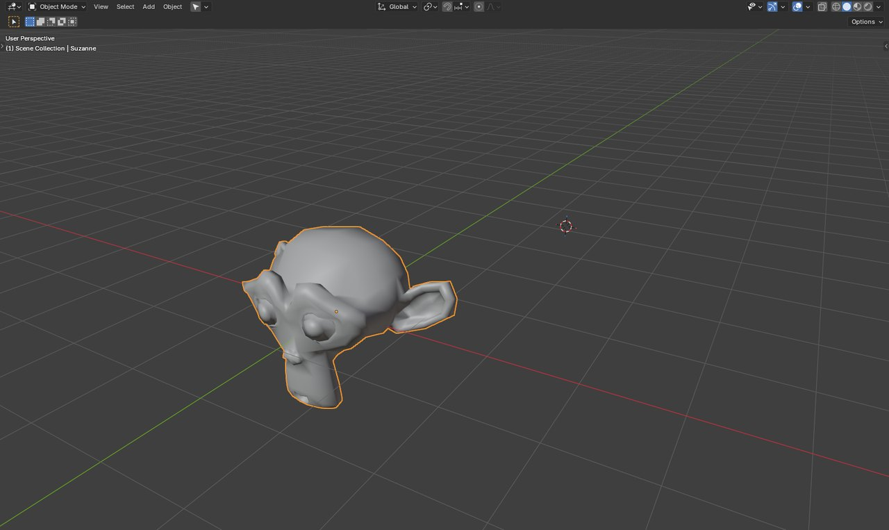
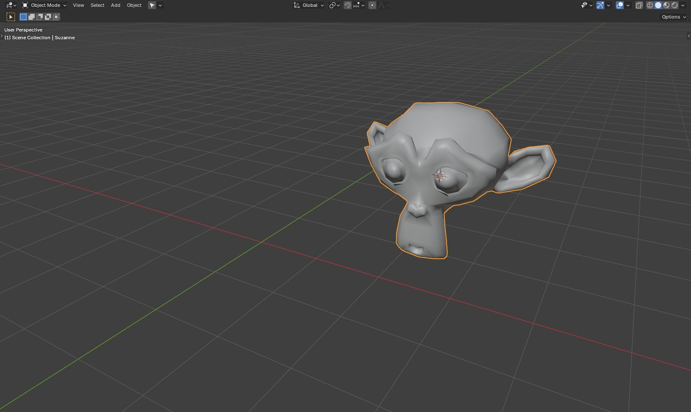
- Move the 3D cursor to where you want to place the object.
- In Object Mode, select Suzanne.
- In the "Smart Transform" tab > "Transform", click "To Cursor".
What to look for: Suzanne moves to the location of the 3D cursor (the red and white ring). Its orientation and size do not change.
ExampleTransfer Orientation and Size to Another Object (Copy and Paste)(demonstrated on Two Suzannes)
Remember the rotation and scale of the tilted, enlarged Suzanne on the left and paste them onto the Suzanne on the right. Keep its location as it is.
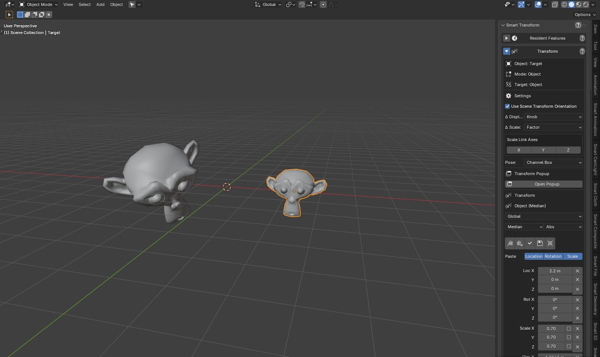
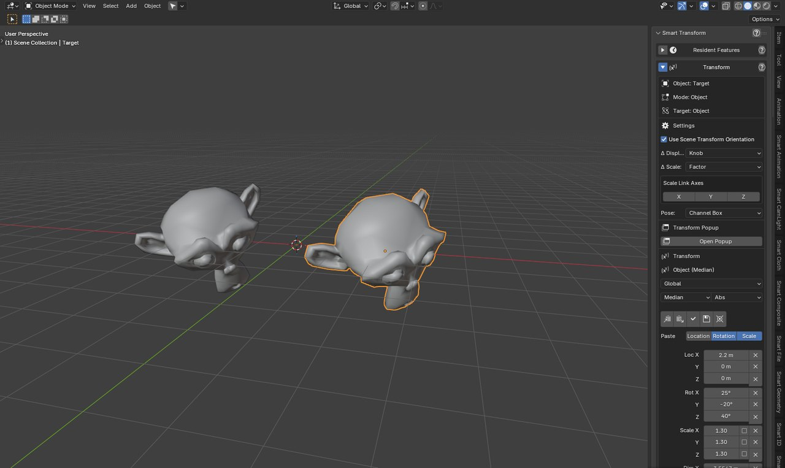
- Select only the left Suzanne and click "Copy" among the icon buttons in the "Smart Transform" tab > "Transform".
- Select only the right Suzanne.
- Turn off "Location" in the paste toggles, then click "Paste" among the icon buttons.
What to look for: The right Suzanne takes on the same tilt and size as the left one. Because "Location" in the toggles is off, the right one stays where it is.
ExampleMatch Only the Size to Another Object(demonstrated on Two Suzannes)
Paste only the size of the left Suzanne onto the right Suzanne. The right one keeps its location and orientation.
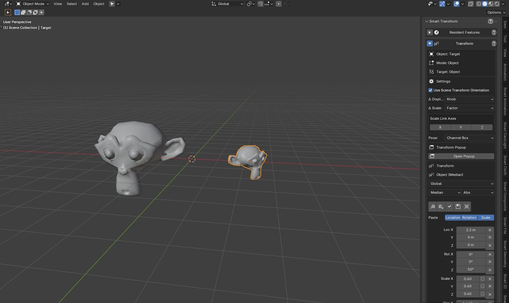
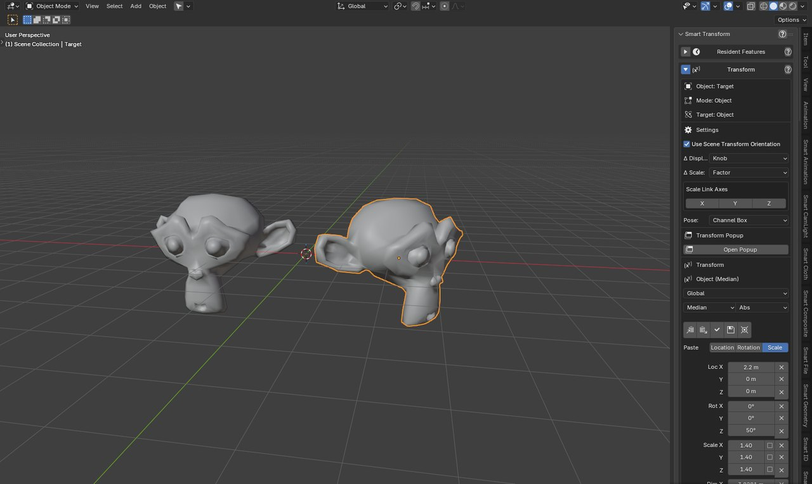
- Select only the left Suzanne and click "Copy" among the icon buttons in the "Smart Transform" tab > "Transform".
- Select only the right Suzanne.
- Turn off "Location" and "Rotation" in the paste toggles and turn on only "Scale".
- Click "Paste" among the icon buttons.
What to look for: The right Suzanne becomes the same size as the left one. Location and rotation, whose toggles you turned off, do not change, so it grows in the same place while still facing right.
ExampleSet the Height by Actual Length(demonstrated on Cube)
Make a 2 m cube 0.5 m tall by entering a number in a "Dimensions" field.
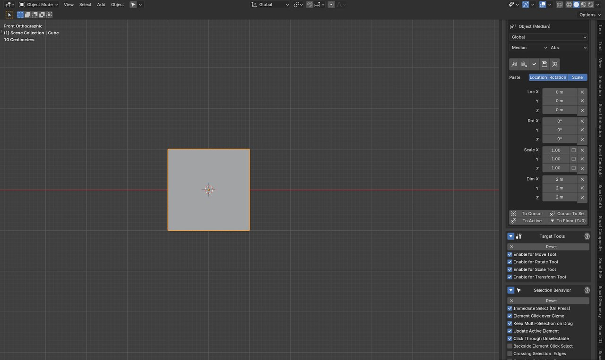
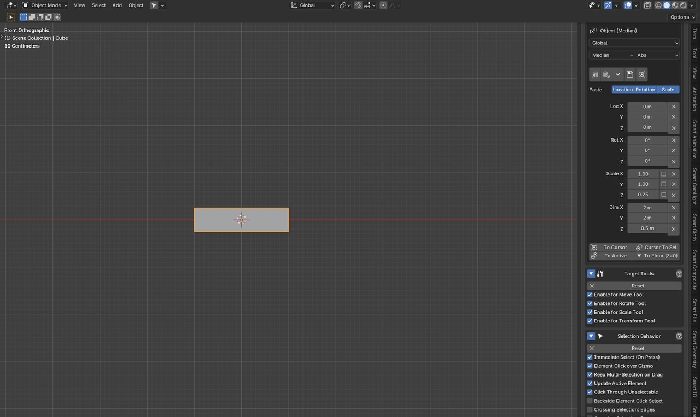
- In Object Mode, select the cube.
- In the "Smart Transform" tab > "Transform", make sure the second and third dropdowns are set to "Median Point" and "Absolute value".
- Enter 0.5 in the "Z" field under "Dim X" and press Enter.
What to look for: Only the height becomes 0.5 m; the width and depth stay at 2 m. The Z field of "Scale" also changes to 0.25 to match.
ExampleReturn a Stretched Object to Its Original Length with the Dimensions "×"(demonstrated on Suzanne)
Use the "×" to the right of the "Dim X" field to return a Suzanne stretched to twice its length along X to its length at scale 1.
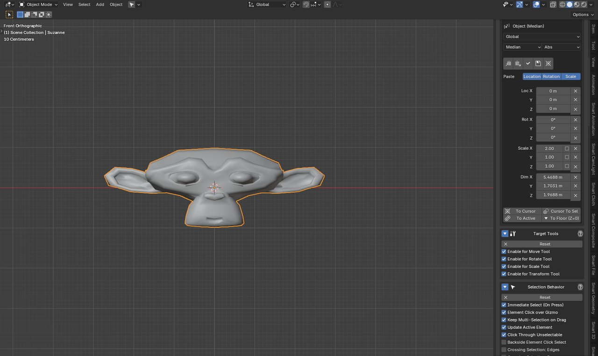
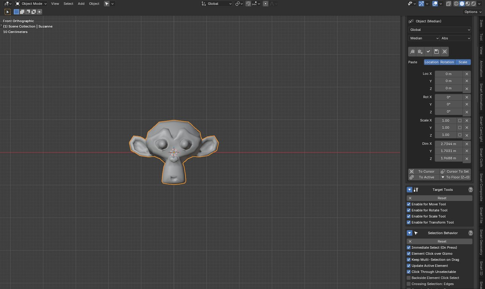
- In Object Mode, select Suzanne.
- In the "Smart Transform" tab > "Transform", click the "×" to the right of the "Dim X" field.
What to look for: The horizontally stretched Suzanne returns to its original width. Its height and depth stay the same.
5-3. Enabled Tools
Choose which of Blender's transform tools use this add-on's click and drag handling.
LocationThe "Enabled Tools" section header.
| Item | What it does |
|---|---|
| Reset | Resets the settings in this section to their initial values. |
| Enable for Move Tool | Uses this add-on's handling with the Move tool. |
| Enable for Rotate Tool | Uses this add-on's handling with the Rotate tool. |
| Enable for Scale Tool | Uses this add-on's handling with the Scale tool. |
| Enable for Transform Tool | Uses this add-on's handling with the Transform tool, which combines move, rotate, and scale. |
5-4. Selection Behavior
Decide how selection is handled when you press the mouse or start dragging in the 3D Viewport.
LocationThe "Selection Behavior" section header.
| Item | What it does |
|---|---|
| Reset | Resets the settings in this section to their initial values. |
| Immediate Select (On Press) | Selects the object under the mouse the moment you press. When off, it selects when you release the button. |
| Element Click over Gizmo | When you click where a gizmo handle overlaps a selectable object, vertex, or similar element, releasing the button selects that element. When you drag, the gizmo handle operation starts instead. |
| Keep Multi-Selection on Drag | When you drag any one of several selected objects, moves all the selected objects together. |
| Update Active Element | When you click an object that is already selected, makes it the active one (the one highlighted in white). |
| Click Through Unselectable | In Object Mode, lets you select objects behind objects that are set to be unselectable. |
| Backside Element Click Select | In mesh Edit Mode, each repeated click on the same spot selects the overlapping vertices, edges, and faces in turn. Box, Lasso, and Circle select are unchanged. It is off at first. |
| Crossing Selection: Edges / Crossing Selection: Faces | In mesh Edit Mode, also selects edges and faces that are even slightly touched by the area of a Box, Lasso, or Circle select. When off, Blender's standard selection is used. It is off at first. |
| Keymap Registration | Use this when you want to register the click selection handling to a shortcut yourself. Click Copy for "3D Click Handler ID" and "Exact Select ID" to copy the operator IDs, then register them in the 3D View area. You normally do not use this. |
5-5. Transform Behavior
Decide how transforming works, such as whether dragging starts a transform directly.
LocationThe "Transform Behavior" section header.
| Item | What it does |
|---|---|
| Reset | Resets the settings in this section to their initial values. |
| Drag to Transform | Dragging starts a transform right away. When off, dragging only selects. |
| Smart Axis Memory | Remembers the axis restriction used last (such as X only) and applies it to the next operation as well. |
| Gizmo Circular Rotation | How rotation works in Smart G-R-S and the smart gizmo. When on, you rotate by moving the mouse around the center of the transform. When off, the angle changes by the amount the mouse moves on screen. It is on at first. |
| Gizmo Distance Scale | How scaling works in Smart G-R-S and the smart gizmo. When on, moving away from the center makes it larger and moving closer makes it smaller. When off, moving the mouse right or up makes it larger and moving it left or down makes it smaller. It is on at first. |
| Disallow Negative Scale | With the Scale tool and the scaling of the Transform tool, keeps values from crossing 0 and going negative (flipping). It is on at first. |
5-6. Background Interaction
Decide what happens when you click or drag on an empty area of the 3D Viewport rather than on an object.
LocationThe "Background Interaction" section header.
| Item | What it does |
|---|---|
| Reset | Resets the settings in this section to their initial values. |
| Background Click Deselect | Clicking an empty area deselects everything. |
| Background Drag Select | Dragging from an empty area immediately shows a rectangular selection frame, and releasing the button selects what is inside the frame. |
5-7. Sensitivity Settings
Decide how far the mouse must move to count as a drag, and how close it must be to pick up a vertex or edge. The mouse sensitivity for Smart G-R-S and similar operations is also here.
LocationThe "Sensitivity Settings" section header. Inside is a collapsible section, "Transform Drag Sensitivity".
| Item | What it does |
|---|---|
| Reset | Resets the settings in this section to their initial values. |
| Drag Threshold (px) | Moving this many pixels after pressing counts as a drag. |
| Vertex Hit Radius (px) | Picks up vertices within this distance of the cursor. Increase it if small vertices are hard to select. |
| Edge Hit Radius (px) | Picks up edges within this distance of the cursor. Decrease it if you select a nearby edge by mistake. |
| Transform Drag Sensitivity | The collapsible section has rows for "Move (G) Sensitivity", "Rotate (R) Sensitivity", and "Scale (S) Sensitivity". In each, enter the normal speed in the left field "Normal" and the speed while holding Shift in the right field "Shift" (when the panel is narrow, the labels are hidden and only the numbers show). Larger values move faster. There is also a "Reset" inside. |
5-8. 3D Smart Gizmo Settings
Decide with which tools this add-on's own gizmos (the arrow and ring handles that appear on screen) are shown, and what size and colors they use.
LocationThe "3D Smart Gizmo Settings" section header.
| Item | What it does |
|---|---|
| Reset | Resets the settings in this section to their initial values. |
| 3D Smart Gizmo: Rotate / Scale / Transform | Whether the add-on's own gizmo is shown with the Rotate, Scale, and Transform tools. |
| Move / Rotate / Scale (the three buttons below) | Choose which handles, move, rotate, and scale, appear on the Transform tool's gizmo. Those that are pressed and blue are shown. |
| Screen Scale | The on-screen size of the whole gizmo. |
| XYZ Axis / Plane Axis / Free Axis | The sizes of the axis handles, the plane handles, and the free-move handle in the center. |
| Gizmo Pick Range (px) | The number of pixels within which a handle can be grabbed. Increase it if handles are hard to grab. |
| 3D Smart Gizmo Colors (X / Y / Z / Free Axis Color / Highlight Color) | The colors of each axis handle, the center handle, and the handle when hovered or in use. |
| Keymap Registration | Use this when you want to create your own shortcut that toggles gizmo display. Click Copy for "Toggle Operator ID" to copy the operator ID. The add-on does not register it automatically. |
ExampleShow the Add-on's Own Gizmo in the 3D Viewport(demonstrated on Suzanne)
While using the Transform tool, show this add-on's own gizmo and change its color and size.
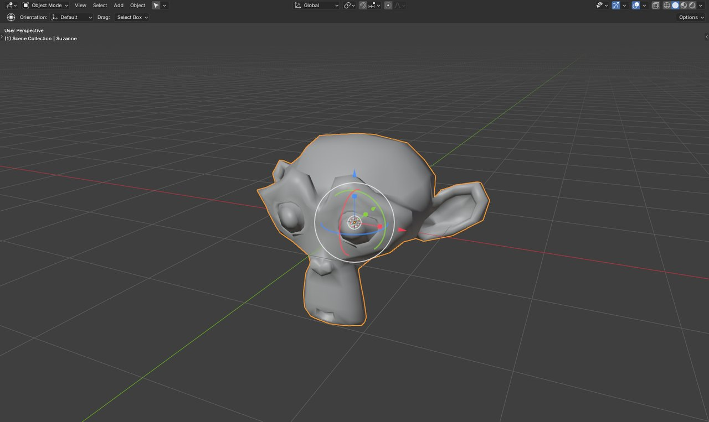
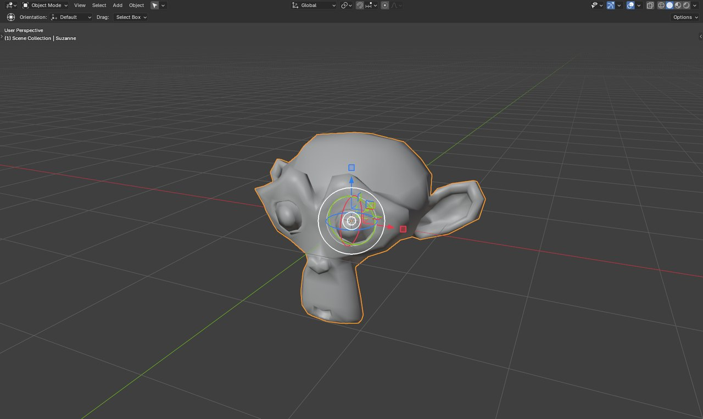
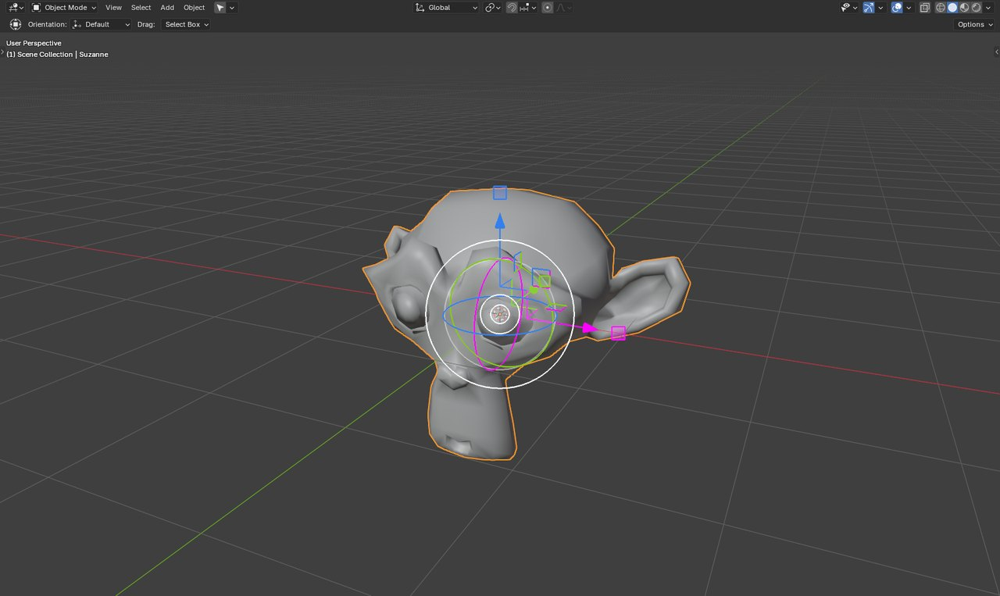
- Choose the Transform tool in the toolbar and select Suzanne.
- Set "3D Smart Gizmo Runtime" to "Enabled" in "Resident Features".
- In "3D Smart Gizmo Settings", set "Screen Scale" to 1.60 and change the color of "X:".
What to look for: When "Enable 3D Smart Gizmo: Transform" is on, the add-on's own gizmo appears over Suzanne. Changes to "Screen Scale" and the color settings show up on screen immediately.
5-9. Smart G-R-S Transform
Smart G-R-S is a transform operation you can use in place of Blender's G (move), R (rotate), and S (scale). It adds an on-screen value display (HUD), snapping, axis lines, and more. To use it, register the operator IDs below in the keymap yourself. If you do not register them, the standard G, R, and S stay as they are.
LocationThe "Smart G-R-S Transform" section header. Inside are collapsible sections "Snapping / Proportional", "Scale Behavior", and "Axis Constraint Line".
| Item | What it does |
|---|---|
| Snapping / Proportional | In the "Snap Steps" row, set the snap steps for move, rotate, and scale. Under "Proportional (Object Mode)", use "Basis" ("Origin" in the figure) to choose how distance is measured for Object Mode Proportional Editing, and "Falloff" ("Blender" in the figure) to choose how the effect weakens. |
| Scale Behavior | "Disallow Negative Scale" decides whether Smart G-R-S scaling is kept from going negative (flipping). It is on at first (never goes negative). |
| Axis Constraint Line | Set "Middle Mouse: Plane Constraints", "Draw Lines in Front (X-Ray)", "Width", "Active" (the line thickness of the selected axis), and the color for each axis (X, Y, Z, and the "Dark" version of each). "Reset" returns them to their initial values. |
| Keymap Registration | "Move G Operator ID", "Rotate R Operator ID", and "Scale S Operator ID" are listed. Click "Copy" to copy an operator ID and register it in the 3D View area of the keymap in Preferences. |
5-10. Proportional Editing
Settings for deciding the influence range of Proportional Editing (a feature that moves the area around the moved spot gradually along with it) by moving the cursor.
LocationThe "Proportional Editing" section header. Inside are collapsible sections "Adjust_Proportional_Size_with_Cursor" and "Smart G-R-S Proportional Adjust".
| Item | What it does |
|---|---|
| Reset | Resets the settings in this section to their initial values. |
| Run | A button inside "Adjust_Proportional_Size_with_Cursor". Starts the tool that adjusts the influence range with cursor movement. |
| Influence Circle | The button at the right of "Run". While it is pressed and blue, a circle showing the influence range is drawn on screen. It is a display only and does not change the Proportional Editing settings. |
| Line Width (px) / Circle Color | The line thickness and color of the influence circle. |
| Cursor Lock | A button inside "Smart G-R-S Proportional Adjust". While you continuously adjust the influence range during a Smart G-R-S transform, keeps the on-screen cursor from moving. |
| Keymap Registration | "Cursor Tool ID" for the cursor adjustment tool (registered in the 3D View area), and "Adjust Modal Action ID", "Step Up ID", and "Step Down ID" for changing the range during a transform (registered in the Transform Modal Map). |
5-11. HUD / Numeric Input
Decide how the display of values and status (the HUD) that appears on screen while you use Smart G-R-S looks.
LocationThe "HUD / Numeric Input" section header.
| Item | What it does |
|---|---|
| HUD | Whether the HUD is shown. |
| Show Help | Whether the HUD shows the operation instructions from the start when Smart G-R-S begins. During the operation you can show or hide them with the H key. |
| Anchor | Choose whether the HUD appears at a fixed place on screen ("Fixed to View") or near the gizmo ("Fixed to Gizmo"). |
| Offset X (px) / Offset Y (px) | The amount to shift the HUD position horizontally and vertically. |
| Font Size / Text Color | The size and color of the HUD text. |
5-12. Overlay Anti-Aliasing
Choose the method used to smooth the lines this add-on draws on screen (gizmos, axis lines, influence circles, and so on).
LocationThe "Overlay Anti-Aliasing" section header.
| Item | What it does |
|---|---|
| Smooth / Standard AA / No AA | "Smooth" draws lines twice for the best quality. "Standard AA" draws once using a Blender feature. "No AA" does not smooth and draws fastest. |
5-13. Other Tools
A place that gathers the settings for several other tools included in this add-on. Collapsible sections for each tool are listed inside.
LocationThe "Other Tools" section header.
| Item | What it does |
|---|---|
| Apply Affect Only to All Object Types | Whether the "Affect Only" setting under Blender's "Options" (the setting that moves only "Origins", "Locations", or "Parents") is also used for non-mesh objects such as empties in the smart gizmo and Smart G-R-S. When off, it is used only when all the selected objects are meshes. It is on at first. |
| Collapsible section for each tool | Lists "3D Cursor Lock", "Precision Numeric Drag", "Cycle Custom Select", "Quick Align", "Quick Multi-Edit", "Island Transform", "Vertex Normal Aligner", and "Smart Select Guard". Open only the ones you want to use. |
5-14. 3D Cursor Lock
A tool that fixes the 3D cursor at its current position so it does not move by accident.
LocationThe "3D Cursor Lock" collapsible section inside "Other Tools", and the bar at the top of the 3D Viewport.
| Item | What it does |
|---|---|
| 3D Cursor Lock Runtime | The same switch as in "Always-on Toggle". You can also switch between Enabled and Disabled within this section. |
| Lock button (bar at the top of the 3D Viewport) | Appears at the right of the menus in the top bar only while the feature is enabled. Clicking it remembers and locks the 3D cursor position in the current scene, and clicking again releases the lock. While locked, the 3D cursor returns to its original position even if you try to move it. |
- Set "3D Cursor Lock Runtime" to "Enabled" in "Always-on Toggle" or in this section.
- Move the 3D cursor to where you want to lock it.
- Click the lock button that appeared in the bar at the top of the 3D Viewport.
ExampleLock the 3D Cursor So It Does Not Move(demonstrated on Suzanne)
When you lock the 3D cursor with the lock button, it stays where it is even if you perform an operation that moves the 3D cursor.
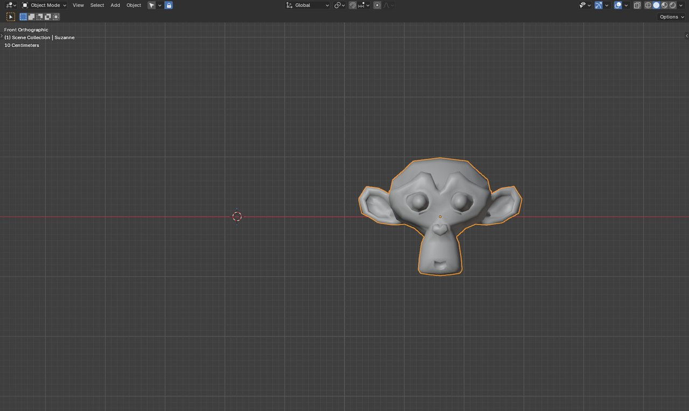
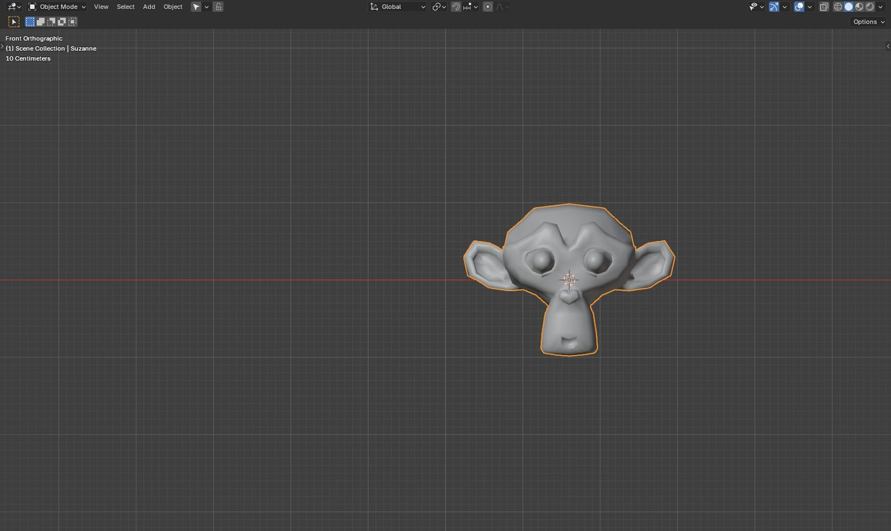
- Set "3D Cursor Lock Runtime" to "Enabled" in "Resident Features".
- Click the lock button that appeared in the bar at the top of the 3D Viewport.
- Select Suzanne and click "Cursor To Sel" in "Transform".
- Click the lock button again to release the lock, then click "Cursor To Sel".
What to look for: While the lock is on, the 3D cursor (the red and white ring) stays on the left even when you click "Cursor To Sel". Once you release the lock, it moves to Suzanne. Also look at the lock icon in the bar at the top.
5-15. Precision Numeric Drag
A tool that makes values change in set steps when you Shift + left drag Blender number fields (decimal fields for rotation, length, mass, time, and temperature).
LocationThe "Precision Numeric Drag" collapsible section inside "Other Tools".
| Item | What it does |
|---|---|
| Steps per Blender Unit (Rotation / Length / Mass / Time / Temperature) | The amount moved per step for each type. The unit chosen in "Scene Properties > Unit" is used and is shown at the right of the field. |
| Keymap Registration | Click Copy for "Operator ID" to copy the operator ID. Register it in Preferences > Keymap > Screen > Screen Editing. Register it yourself as a Shift + left mouse "Press". |
- Set "Precision Numeric Drag" to "Enabled" in "Always-on Toggle".
- Click Copy for "Operator ID" under "Keymap Registration", then register it in the Preferences keymap "Screen > Screen Editing" as a Shift + left mouse "Press".
- Hold Shift over a number field and drag left or right.
5-16. Cycle Custom Select
A tool that cycles in turn through the selection methods (Hold, Box, Circle, Lasso) used when you drag the background while keeping a tool such as Move or Rotate.
LocationThe "Cycle Custom Select" collapsible section inside "Other Tools".
| Item | What it does |
|---|---|
| Run Cycle Custom Select | Switches the selection method to the next one, once. |
| Select Mode: Current | Shows the current selection method. You can also choose one directly here. |
| Long Press / Box Select / Circle Select / Lasso Select | The selection methods included in the cycling order. It goes through the ones that are pressed and blue in turn, and skips those turned off. |
| Keymap Registration | When you want to switch with a shortcut, click Copy for "Operator ID" to copy the operator ID. It is registered in the 3D View area. |
5-17. Quick Align
A tool that takes one of two or more selected objects as the reference (target) and aligns the others to its location and orientation. A window for checking the result appears before aligning.
LocationThe "Quick Align" collapsible section inside "Other Tools". A start item is also added to the 3D Viewport "Object" menu.
| Item | What it does |
|---|---|
| Start Quick Align | Select two or more objects in Object Mode and click, and the alignment window opens right away. |
| Open Align Dialog | Opens the alignment window directly. |
| Main Items in the Opened Window | "Target Selection" chooses whether the last selected object (the initial setting) or the first selected object is the reference. "Align Location (World)", "Align Orientation (Local)", and "Match Scale" turn on or off, axis by axis, what gets aligned. "Per-Axis Reference Point" chooses where on the object the reference is taken (the base point, the center, and so on). "Even Distribution" spaces three or more objects at equal intervals. "Continuous Mode" starts the next alignment right after you confirm. |
| Warp Cursor on Open / Warp Offset (px) | When the window opens from "Start Quick Align", the cursor is first shifted sideways so the window is less likely to cover the current spot. If the shift amount is small or you are at the edge of the screen, the spot may still be covered. It does not move for the follow-up windows of Continuous Mode. |
| Preview Throttle (ms) | How often the displayed result is updated when you change settings in the window. With many objects, a larger value makes it lighter. |
| Keymap Registration | "Start Tool ID", "Dialog Popup ID", "Dialog Swap ID", and "Dialog Reset ID" are listed. They are registered in 3D View > Object Mode. |
- In Object Mode, select the objects you want to align and the reference object. With the initial setting, the last selected object becomes the reference.
- Click "Start Quick Align".
- Check the result in the window that opens, then confirm.
ExampleMatch the Heights of Three Objects to One of Them(demonstrated on Three Suzannes)
Among Suzannes at different heights, use the last selected one as the reference and match only the height of the others.
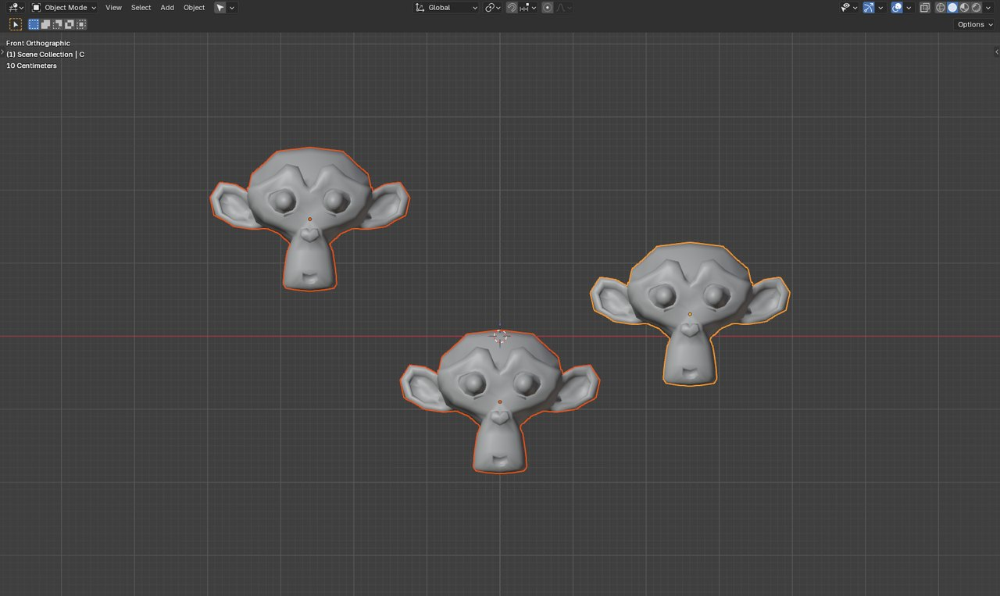
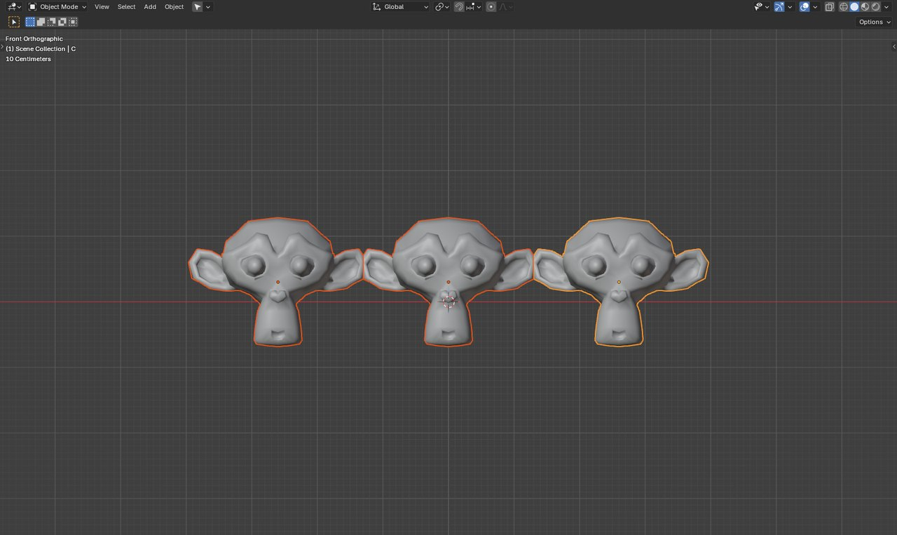
- In Object Mode, select the left and middle Suzannes, and select the right Suzanne last.
- In the "Smart Transform" tab > "Other Tools" > "Quick Align", click "Start Quick Align".
- In the window that opens, turn on only "Z Position" under "Align Position (World)", and clear all the checkboxes under "Align Orientation (Local)" and "Match Scale".
- Check the result and click "OK".
What to look for: The left and middle Suzannes move to the same height as the right Suzanne (the reference). Their horizontal positions do not change.
5-18. Quick Multi-Edit
A tool that adds or removes objects to edit together while staying in Edit Mode. You can operate by click, box, lasso, or whole collection.
LocationThe "Quick Multi-Edit" collapsible section inside "Other Tools". An item is also added to the right-click menu of collections in the Outliner.
| Item | What it does |
|---|---|
| Default Click Shortcut: Mouse | Choose the mouse button to use as a guide when you register a shortcut yourself. The add-on does not create shortcuts automatically. |
| Operations: Add / Remove / Toggle / Solo | After you press a button, clicking an object in the 3D Viewport adds it to, removes it from, toggles it in, or makes it the only member of the set being edited together. It ends after one click. Esc or right click cancels. Clicking the header or another area also cancels. Objects cannot be selected over the Sidebar and toolbar strips, even where the object shows through. A notice appears when you press there, and it keeps waiting. To press another button in the panel, cancel with Esc first. The next operation is shown in the bar at the bottom of the screen. If you register it to a shortcut under Keymap Registration below, it acts immediately on the object under the mouse. The buttons can be pressed only in Edit Mode. |
| Restore Previous | Returns to the set from before the last change. |
| Box+ / Box- / Box ±, Lasso+ / Lasso- / Lasso ± | After you press a button, dragging in the 3D Viewport to enclose objects with a rectangular frame or a lasso adds them, removes them, or toggles them all at once. An object counts as enclosed when a corner of its bounding box falls inside the frame. Esc or right click cancels, even in the middle of a drag. Start the drag outside the Sidebar and toolbar strips. You can also register them to shortcuts and use them over the 3D Viewport. An operation that would leave the set empty is not allowed. |
| Set from Active Collection / Add Collection / Remove Collection / Toggle Collection | Creates the set from, adds to it, removes from it, or toggles in it the objects in the active collection. |
| Active Behavior | Choose which object becomes active after the set is changed. |
| Restrict to same object type as active / Respect visibility/selection locks / Only Same Collection / Only Same Name Prefix | Narrows down which objects can be added: only objects of the same type as the active one, only objects that are visible and selectable, only objects in the same collection, or only objects whose names start the same way. When "Only same name prefix" is on, a "Custom name prefix" field also appears. |
| Enable cycle pick / Cycle Timeout / Cycle Pixel Threshold / Max cycle hits | Clicking the same spot repeatedly moves in turn to the overlapping objects behind. Set the time that counts as repeated clicking, the allowed cursor drift, and the upper limit on the number of candidates. |
| Fast path without mode toggle | Processes with a fast method when switching modes is not needed. |
| Show status report / Show HUD message in viewport / HUD duration (sec) | Whether to show a short message announcing the result, whether to show a short display in the 3D Viewport, and how many seconds that display stays. |
| History depth | The number of sets remembered for "Restore Previous". |
| Keymap Registration | Lists the Copy buttons for each operation's operator ID ("Add ID", "Remove ID", and so on). They are registered in the 3D View area (only "Outliner Collection ID" is for the Outliner). Register only the ones you need. |
ExampleAdd Another Mesh to Editing Without Leaving Edit Mode(demonstrated on Three Suzannes)
While editing one Suzanne, add the Suzannes in the same collection to the set being edited together. You do not need to leave Edit Mode.
- Select the middle Suzanne and enter Edit Mode.
- In the "Smart Transform" tab > "Other Tools" > "Quick Multi-Edit", click "Add Collection".
What to look for: Before, only the middle Suzanne shows its wireframe (vertices and edges). After, the left and right Suzannes show their wireframes too, and you can edit all three together.
ExampleAdd or Remove Objects in the Edit Set by Clicking(demonstrated on Three Suzannes)
Click "Add" in the panel and then click an object in the 3D Viewport, and that object joins the set being edited together. With "Remove", it leaves the set.

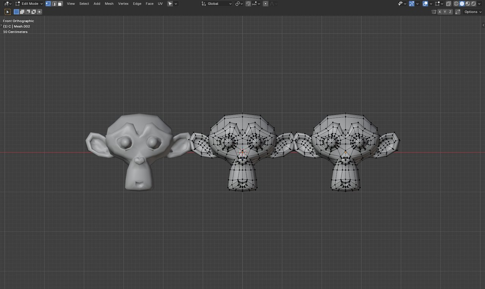
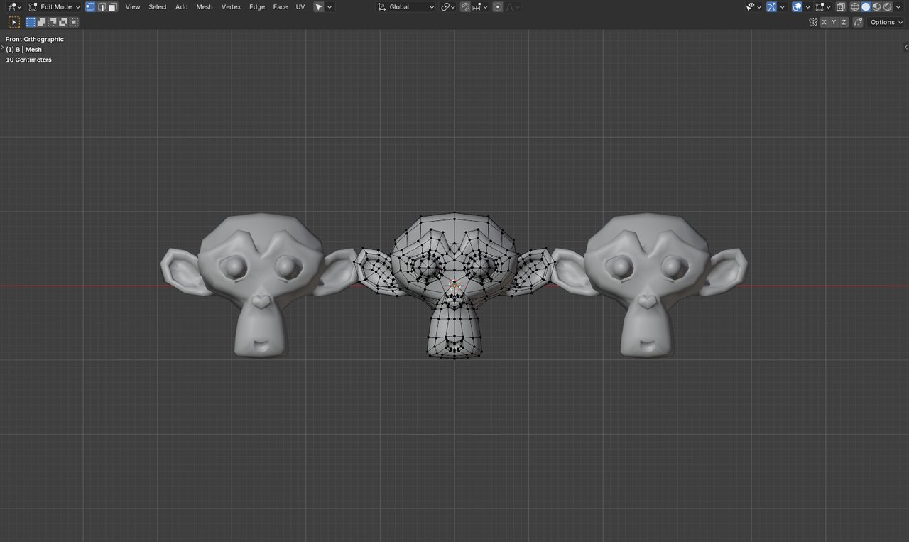
- Select the middle Suzanne and enter Edit Mode.
- In the "Smart Transform" tab > "Other Tools" > "Quick Multi-Edit", click "Add".
- Click the right Suzanne in the 3D Viewport.
- Click "Remove", then click the right Suzanne again.
What to look for: Objects that show a wireframe (vertices and edges) are the ones you can edit right now. Each click makes the right Suzanne's wireframe appear or disappear. You do not need to leave Edit Mode.
ExampleAdd Objects Enclosed in a Frame to the Edit Set All at Once(demonstrated on Three Suzannes)
Click "Box+" in the panel and then drag in the 3D Viewport, and the objects you enclose in the frame all join the set being edited together.
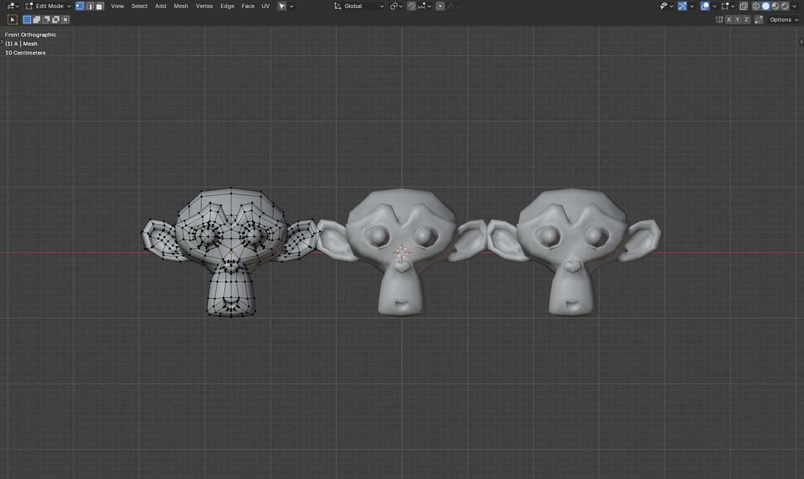
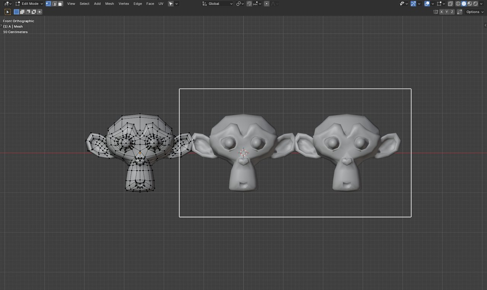
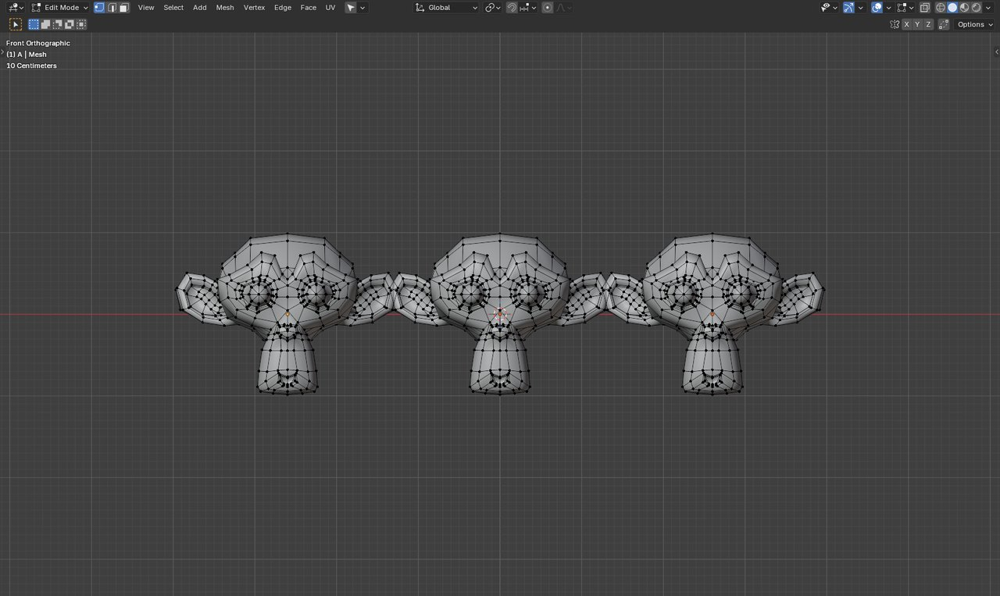
- Select the left Suzanne and enter Edit Mode.
- In the "Smart Transform" tab > "Other Tools" > "Quick Multi-Edit", click "Box+".
- In the 3D Viewport, drag to enclose the middle and right Suzannes.
What to look for: A white frame appears while you drag. When you release the mouse button, the two enclosed Suzannes also show their wireframes.
ExampleObjects That Share the Same Mesh Do Not Join the Set(demonstrated on Three Suzannes (the left one is a linked duplicate))
The left Suzanne is a linked duplicate that shares the same mesh as the middle one. Even when you click "Add Collection", the left one does not join the set; only the right one, which has a different mesh, joins.

- Select the middle Suzanne and enter Edit Mode.
- In the "Smart Transform" tab > "Other Tools" > "Quick Multi-Edit", click "Add Collection".
What to look for: The right one shows its wireframe, but the left one does not. The names of the dropped objects are shown at the bottom of the screen. When you edit the middle one, the shape of the left one, which shares its mesh, changes along with it.
5-19. Island Transform
A tool that, in mesh Edit Mode, moves, rotates, and scales the selected area one connected part (island) at a time. It works with Smart G-R-S and the smart gizmo.
LocationThe "Island Transform" collapsible section inside "Other Tools". The feature is turned on or off with "Island Transform" in "Always-on Toggle".
| Item | What it does |
|---|---|
| Only with Individual Origins | When on, parts are transformed separately only when Blender's pivot point is "Individual Origins". With other pivots, it behaves as usual. It is on at first. |
| Keymap Registration | "Move G Operator ID", "Rotate R Operator ID", and "Scale S Operator ID", plus the "Toggle Operator ID" that switches the feature on and off. Use them by replacing G, R, and S in the Preferences keymap "3D View > Mesh". When the feature is off, the work passes to Blender's standard transform. |
5-20. Vertex Normal Aligner
A tool that, in mesh Edit Mode, aligns the object's origin or coordinate system to the average location and average direction (normal) of the selected vertices. It uses the selected vertices that are visible. The visible shape does not change.
LocationThe "Vertex Normal Aligner" collapsible section inside "Other Tools".
| Item | What it does |
|---|---|
| Align Object Pivot | Moves the object's origin to the average location of the selected vertices and aligns the object's Z axis to the average normal. The mesh inside moves the opposite way, so the appearance does not change. It is on while pressed and blue, and is on at first. |
| Create Custom Orientation | Creates (overwriting if it exists) a custom coordinate system named "VertexNormal" and makes it the coordinate system in use. It is on while pressed and blue, and is on at first. |
| Align to Selected Vertex Normal | Runs the processes turned on above. It can be pressed only in mesh Edit Mode. When it cannot be pressed, "Select vertices, edges, or faces." appears below. Select at least one vertex, edge, or face before pressing. |
| Keymap Registration | When you want to use it with a shortcut, click Copy for "Align Operator ID" to copy the operator ID. It is registered in 3D View > Mesh. |
ExampleAlign the Origin and Orientation to the Ear Faces(demonstrated on Suzanne)
Select the faces at the tip of an ear, move Suzanne's origin there, and align the object's Z axis with the average direction (normal) of the selected faces. The shape does not move.
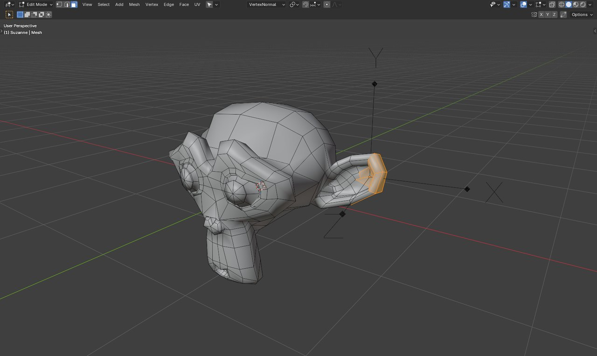
- Select Suzanne, and in the Properties Editor, turn on "Axes" and "In Front" under "Object Properties" > "Viewport Display" (the arrows of the object's axes become visible).
- Put Suzanne in Edit Mode and select the faces at the tip of the ear on the right side of the screen.
- Open the "Smart Transform" tab > "Other Tools" > "Vertex Normal Aligner".
- Make sure "Align Object Pivot" and "Create Custom Orientation" are blue (on).
- Click "Align to Selected Vertex Normal".
What to look for: The object's axis arrows (the lines labeled X, Y, and Z) move from the center of the head to the tip of the ear and change direction. The Z arrow turns to point in the average direction (normal) of the selected faces. The coordinate system field at the top of the screen changes to "VertexNormal". Suzanne's shape stays the same.
5-21. Smart Select Guard
A tool that filters selection by whether things are visible and whether they are hidden behind other shapes, making it harder to select objects behind by mistake.
LocationThe "Smart Select Guard" collapsible section inside "Other Tools". A button to turn it on or off and a button to open a small settings window also appear in the bar at the top of the 3D Viewport.
| Item | What it does |
|---|---|
| Ignore Selected Occluders | Switches whether the currently selected objects are treated as "objects that hide others". It toggles with each click. |
| Basic Settings: Smart Select Guard | Whether this tool is used in the current scene. |
| Select Through when X-Ray Off | Even when X-Ray is off, temporarily turns X-Ray on only during the selecting operation so you can select what is behind, then restores it afterward. |
| Enable Key (Assign Hold Key Shortcut / Clear Hold Key Shortcut) | Use this when you want the tool to work only while a key is held. Right-click "Assign Hold Key Shortcut" to assign a key. "Clear Hold Key Shortcut" removes it. When there is no key, it is always active and "Key: Always On" appears. The assigned key is shown in this row. |
| Selection Behavior (Click Select Filter / Enable Other Objects Occlusion / Enable Mutual Occlusion for Multi-Edit / Status Display) | Whether it also applies to ordinary click selection, whether objects not being edited in Edit Mode are treated as hiding others, whether objects being edited together also hide one another, and whether a short notice is shown when it takes effect. |
| not | Objects in the collection chosen here (and the collections inside it) are not treated as hiding others. |
| Keymap Registration | "Hold Enable Operator ID", which works only while held; "Toggle ID", which switches on and off; and "Ignore Selected ID" for Ignore Selected Occluders. They are registered in the 3D View area. |
5-22. Transform Popup
Opens the same number fields as "Transform" in a small window. The fields change to match the current mode, and Blender's standard transform fields are listed below them.
LocationOpen it from "Open Popup" inside "Transform". To open it with a shortcut, right-click this button and assign a shortcut.
| Item | What it does |
|---|---|
| Coordinate System, "Median Point" / "Each", "Absolute value" / "Δ" | The same dropdowns as in the Sidebar. |
| Copy / Paste / Apply R/S / Apply All / Snap to Cursor | The same icon buttons as in the Sidebar. Below them are also the paste toggles (Location / Rotation / Scale). |
| Object Mode Fields | "Loc X", "Rot X", "Scale X", and "Dim X", plus the Y and Z of each, appear. |
| Pose Mode Fields | "Loc X", "Rot X", and "Scale X", plus the Y and Z of each, appear. |
| Mesh Edit Mode Fields | In addition to "Loc X" and Y and Z, "V. Bevel", "Vertex Crease", "E. Bevel", and "E. Crease" appear. |
| To Cursor / Cursor To Sel / To Active / To Floor (Z=0) | The same snap buttons as in the Sidebar. |
Other Screens
6. Common Tasks
Set an Object's Size by Its Actual Length
Make a box exactly 2 m tall.
- In Object Mode, select the box.
- Open the "Smart Transform" tab in the Sidebar, then open the "Transform" section header.
- Make sure the third dropdown is set to "Absolute value".
- Enter 2 in the "Z" field under "Dim X" and press Enter.
Result: The box becomes 2 m tall.
Rest a Placed Object on the Floor
Align the height of a floating object to Z=0.
- In Object Mode, select the object.
- To align per object, set the dropdown to "Each"; to align by the center of the whole selection, set it to "Median Point".
- Click "To Floor (Z=0)".
Result: The selected object's origin (the center of the whole selection with "Median Point") lands at Z=0.
Lock In Transforms Before Exporting
Lock in the rotation and scale values as they currently look.
- In Object Mode, select the object.
- Among the icon buttons in "Transform", click "Apply R/S" (or "Apply All" to lock in location as well).
- When the confirmation window appears, read it and confirm.
Result: The appearance stays the same, and rotation becomes 0 and scale becomes 1.
Use Smart G-R-S with the G, R, and S Keys
Use Smart G-R-S, with its HUD and snapping, in place of the standard G, R, and S.
- Open the "Smart G-R-S Transform" section header and look at "Keymap Registration" at the very bottom.
- Click Copy for "Move G Operator ID".
- In the Blender Preferences "Keymap", create a new item in the 3D View area, paste the copied ID, and set the key to G.
- Register Rotate R and Scale S in the same way.
Result: Pressing G, R, or S runs Smart G-R-S. If you do not register them, the standard G, R, and S stay as they are.
Add Another Mesh to Editing While Staying in Edit Mode
While editing one mesh, edit the neighboring mesh together with it.
- Select a mesh and enter Edit Mode.
- Open "Quick Multi-Edit" inside "Other Tools" and click "Add" under "Operations".
- In the 3D Viewport, click the mesh you want to add.
Result: The mesh under the mouse also enters Edit Mode, and you can edit them together. "Restore Previous" returns to the original set.
Match Only the Size to Another Object
Match only the size to another object, leaving location and orientation as they are.
- Select only the model object and click "Copy" among the icon buttons in "Transform".
- Select only the objects you want to match.
- Turn off "Location" and "Rotation" in the paste toggles and turn on only "Scale".
- Click "Paste" among the icon buttons.
Result: Only the size becomes the same as the model object. When you are done, return the toggles to their original state so the next paste pastes everything.
7. Troubleshooting
- I enter numbers, but the object does not move.
- The number fields in the Sidebar change values when an object is selected in Object Mode. Check that you are in Object Mode and have an object selected. To enter numbers in Edit Mode or Pose Mode, use the small window from "Open Popup".
- I press G, R, or S, but Smart G-R-S does not start.
- This add-on does not create key assignments automatically. Copy the operator IDs under "Smart G-R-S Transform" and register them yourself in the Preferences keymap.
- The lock button does not appear in the bar at the top of the 3D Viewport.
- It appears when you set "3D Cursor Lock Runtime" to "Enabled" in "Always-on Toggle".
- Shift + left drag does not change the steps of a number field.
- Enable "Precision Numeric Drag" in "Always-on Toggle", and then register the operator ID inside "Precision Numeric Drag" in the keymap "Screen > Screen Editing" as a Shift + left mouse "Press". It applies only to decimal fields for rotation, length, mass, time, and temperature.
- "Align to Selected Vertex Normal" cannot be clicked.
- It can be clicked only when a mesh is selected and you are in Edit Mode. Before clicking, select at least one vertex, edge, or face.
- I click "Add" under "Quick Multi-Edit", but the set does not change.
- Add, Remove, Toggle, and Only work when you click an object in the 3D Viewport after pressing. For box and lasso, drag in the 3D Viewport after pressing. The next operation is shown in the bar at the bottom of the screen. They do not work over the Sidebar and toolbar strips. Objects that share the same mesh as an object in the current set cannot be added.
- I click "Start Quick Align", but no window appears.
- Select two or more objects in Object Mode before clicking.
- I want to return the settings to their initial state.
- Many section headers contain a "Reset" that returns only the settings in that section to their initial values.
- The panel says "Settings display is paused."
- While Blender is switching the active object or mode, the display is paused temporarily for safety. The display returns when the switch finishes.
For problems common to every add-on, such as an add-on not appearing or the interface language not changing, see "Troubleshooting" in the SmartTools Overall Specification.
8. Glossary
- Transform
- Changing an object's location, rotation, or size.
- Scale
- The multiplier of an object's size. 1 is the original size.
- Dimensions
- An object's actual lengths (width, depth, and height).
- Δ
- The amount added to the current value. With "Absolute value", the number you enter becomes the value as is.
- Median Point / Each
- Whether selected objects are treated as a group at their center, or one by one.
- Apply
- Locking in the current rotation or size as the object's original state without changing its appearance.
- 3D Cursor
- The red and white ring marker shown in the 3D Viewport. It is used as the place to put objects and as the center of rotation.
- Gizmo
- The arrow and ring handles shown in the 3D Viewport. Grab one and drag to transform.
- HUD
- A display of values and status overlaid on the screen during an operation.
- Snap
- Matching exactly to a set step or a set place.
- Proportional Editing
- A feature that also moves the area around the moved spot a little, according to distance.
- Island
- A group of parts within a mesh that are connected by edges.
- Normal
- The direction a face or vertex points.
- Keymap
- A table that maps key and mouse operations to the functions they run. You can change it in the Preferences "Keymap".
- Operator ID
- The name of a function, used when registering the function in the keymap. You can copy it with the panel's Copy button.
9. Appendix: Version, Checksum and Limitations
| Add-on | SmartTransform Suite (smart_transform_suite) |
|---|---|
| Version | 1.0.0 |
| ZIP | SmartTransformSuite_1.0.0.zip |
| Size | 659,085 bytes |
| SHA256 | b1aa1b41da1b85429040ec8c17009a91a5c74d528d3f5ea79c33cb90ff0b2d11 |
Limitations and Notes
- Assignments to keys and the mouse are not created automatically. When you use Smart G-R-S, Island Transform, Precision Numeric Drag, Quick Multi-Edit, and others with shortcuts, register the operator IDs in the keymap yourself.
- The number fields in the Sidebar change values only when an object is selected in Object Mode.
- "Apply R/S", "Apply All", and "To Active" work only in Object Mode.
- Outside Object Mode and mesh and lattice Edit Mode, Smart G-R-S leaves the work to Blender's standard transform.
- Quick Align can be used only when two or more objects are selected in Object Mode.
- Settings are changed in the Sidebar panel, not in the add-on's Preferences screen.
- In Quick Multi-Edit, objects that share the same mesh cannot be edited at the same time because of how Blender works.
- After pressing a Quick Multi-Edit button, objects over the Sidebar and toolbar strips cannot be selected. They cannot be selected even where they show through, so move the view to bring them out of the strips. When "Region Overlap" in Preferences is off, clicking the Sidebar cancels the operation.
SmartTransform Suite Manual v1.0.0 / Built 2026-11-19